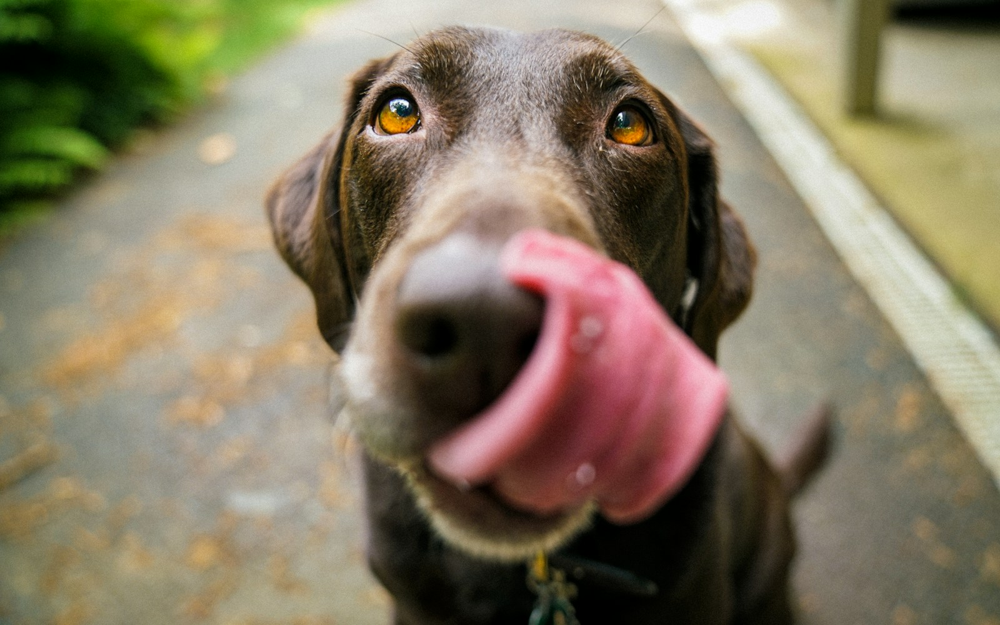
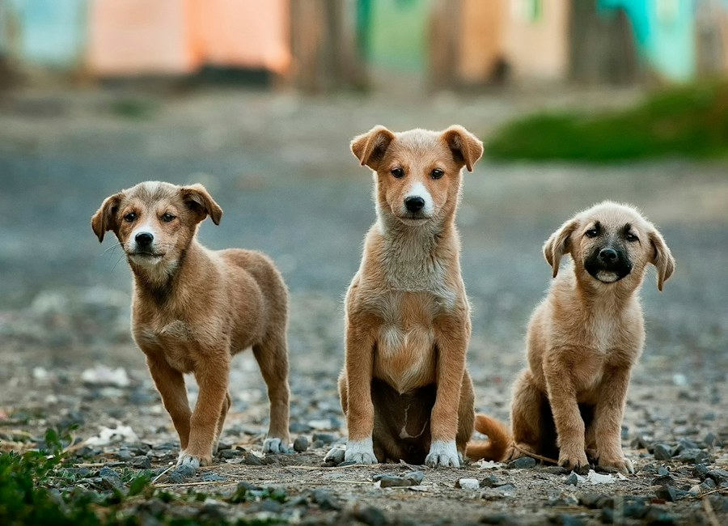
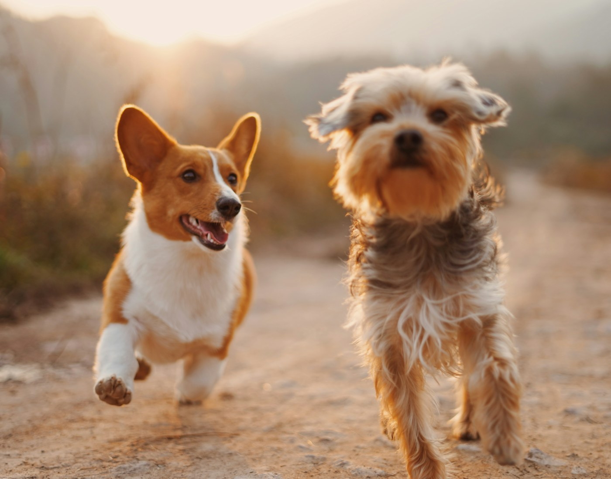
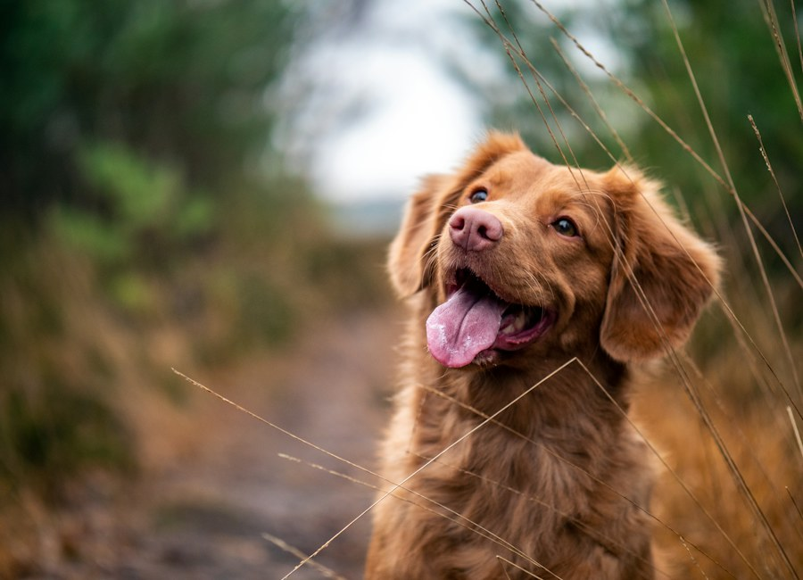
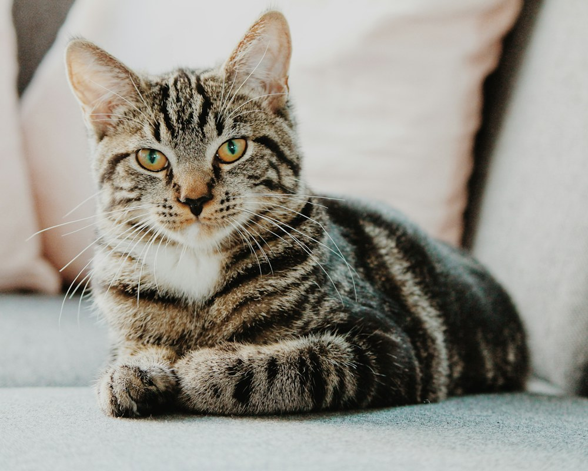

한국 동물보육원 연합회 / 구조 · 보호 · 입양
보호, 그다음의 삶을 잇다.
구조로 시작해, 새로운 가족을 만나는 날까지.
동물의 속도에 맞춰, 다음 일상을 함께합니다.
다시 편안해지는 연습.
A life beyond shelter.
우리의 보호는
어떤 모습이어야 할까요.
기다리는 시간도,
돌봄입니다.
낯선 손에 익숙해지고,
다시 산책길에 나서고,
누군가의 곁에서 편히 잠드는 일.
한국 동물보육원 연합회는
위기동물의 구조와 입소 상담,
보호와 입양을 연결합니다.
그 과정에서 서두르지 않겠습니다.
한 마리가 일상을 되찾는 속도에 맞춰.
02 / THE WAY WE CARE
한 번의 구조가
한 생명의 일상으로.
구조 · 보호 · 회복 · 입양
우리의 돌봄이 이어지는 방식

보호 과정을 설명하기 위한 예시 사진입니다.
위치와 동물의 상태를 확인하고, 상황에 맞는 구조 방법을 함께 찾습니다.
03 / NOT JUST A PROFILE
함께 살면,
어떤 날들이 될까요?
사진 너머의 성격과 습관까지.
서로를 알아가는 일부터 시작해요.
8마리의 이름과 정보는 UI 시연용입니다. 실제 입양 공고는 공식 사이트에서 확인해 주세요.
실제 입양 공고 보기 (공식 사이트, 새 창, 인터넷 필요)
A LIFE AFTER RESCUE / 가상 이야기
처음으로,
먼저 다가온 날.
“오늘은 조금 더 걸어볼까?”
처음 내민 손을 낯설어하던 보리가
먼저 다가오는 날까지.
기다려 주는 시간도 돌봄의 일부입니다.
04 / A THOUGHTFUL DECISION
마음이 가는 것과,
가족이 되는 것 사이.
빠른 결정보다 오래 함께할 준비가 먼저입니다.
-
01
동물 확인
성격과 생활 습관을 살피며
함께할 친구를 알아봐요. -
02
입양 상담
생활환경과 돌봄 계획을
담당 시설과 이야기해요. -
03
만남과 상담
방문 일정을 정하고
서로를 알아가는 시간을 가져요. -
04
입양 결정
충분히 고민한 후
새로운 일상을 함께 준비해요.
입양 전, 가족 모두와 충분히 이야기 나눠 주세요.
세부 절차와 조건은 동물과 보호시설에 따라 달라질 수 있습니다.
05 / CLOSE TO YOU
가까운 곳에서,
같은 마음으로.
전국에서 가까운 보호시설을 만나보세요.
방문 전, 해당 시설에 먼저 문의해 주세요.
전국을 잇는 보호 네트워크
공식 홈페이지 표기 기준 · 2026.11.03 확인어디에서 만나볼까요?
EXPLORE THE NETWORK서울의 보호시설
3곳 안내-
서울본부서울특별시
-
강남지부서울특별시 강남구
-
강서지부서울특별시 강서구
공식 홈페이지에 소개된 일부 시설입니다.
정확한 위치와 운영 여부는 상담으로 확인해 주세요.
WHAT MATTERS
숫자보다 중요한 건,
다시 이어진 삶입니다.
구조가 필요한 순간의 상담부터, 머무를 곳과 새로운 가족까지.
전국의 연결이 한 생명의 다음을 만듭니다.
LIFE, CONNECTED
돌봄이 이어지는 이야기.

도움이 필요한 순간,
어떻게 연결될까요?
동물 구조 서비스 안내 (공식 사이트, 새 창, 인터넷 필요)

가족이 된 뒤에도
계속되는 일상.
공식 입양가족 게시판 (새 창, 인터넷 필요)
함께하는 활동돌봄의 범위를 넓히는
작은 연결들.
공식 대외 협력 활동 (새 창, 인터넷 필요)
활동 이미지는 이해를 돕기 위한 예시 사진이며, 링크는 공식 안내로 연결됩니다.
06 / MAKE ROOM FOR CARE
함께할 방법은
입양만 있는 건 아니니까.
BEFORE WE MEET
궁금한 마음에,
먼저 답합니다.
더 궁금한 점은 상담에서
차근차근 이야기해 주세요.
먼저 관심 있는 동물을 확인한 뒤 해당 보호시설에 상담을 요청해 주세요. 생활환경과 돌봄 계획을 이야기하고, 시설 안내에 따라 만남과 입양 절차를 진행합니다. 동물과 지부에 따라 세부 절차가 다를 수 있습니다.
상단의 ‘입소·입양 상담’ 또는 아래 상담 버튼을 이용해 주세요. 동물의 종류, 건강 상태, 현재 상황을 정리하면 상담에 도움이 됩니다. 입소 가능 여부와 조건은 상담 후 확인해야 합니다.
가까운 시설 또는 관심 있는 동물을 보호 중인 시설로 먼저 문의해 주세요. 지역이 다른 경우 방문 일정과 이동 방법을 포함해 해당 시설과 조율해야 합니다.
직접 접근하거나 무리하게 옮기기보다 안전한 거리에서 위치와 동물의 상태를 확인해 주세요. 아래 ‘입소·구조 상담’에서 공식 상담 채널을 확인할 수 있습니다. 구조 가능 여부는 지역과 현장 상황에 따라 달라질 수 있습니다.
동물의 휴식과 시설 운영 일정을 위해 방문 전에 해당 지부로 문의해 주세요. 방문 가능 여부, 시간, 준비사항은 시설별로 확인하는 것이 좋습니다.
참여 섹션의 안내를 열어 활동 지역과 가능한 일정, 또는 전달할 물품 종류를 먼저 정리해 주세요. 모집 여부와 필요한 물품은 지부별로 다르므로 공식 상담 채널에서 확인해 주세요.